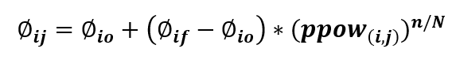

Ajuste del tiempo entre señales de tráfico Øij
Ajuste de en la duración del ciclo del semáforo en la intersección durante la transición

Cuando cambian los tiempos de las señales de tráfico, también cambia el tiempo (s) entre ellas.
Øio (seg):
Øif (seg):
ppow(i,j):
n:
N:
Calcular
Atrás